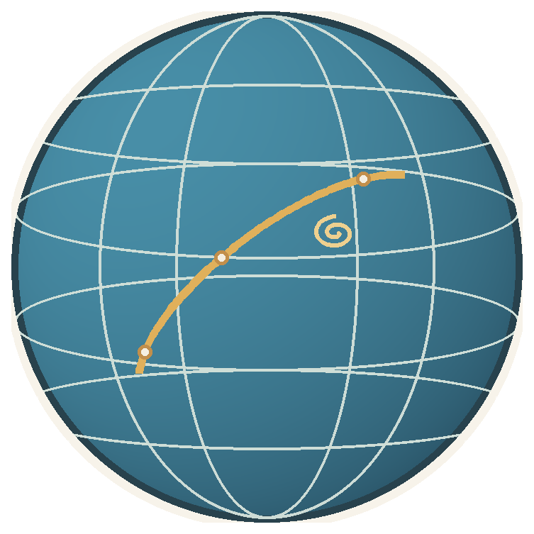
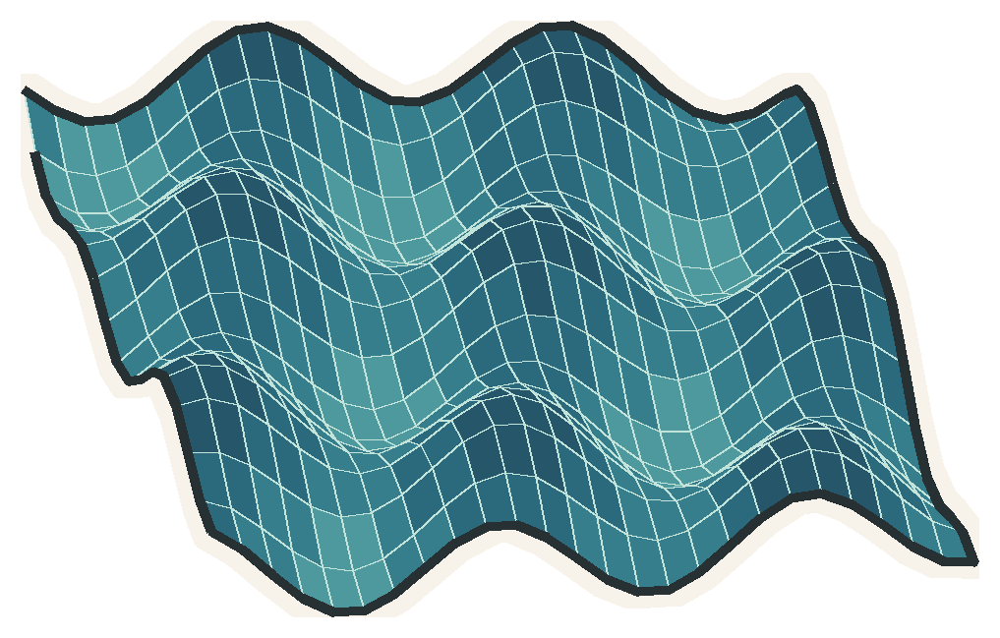
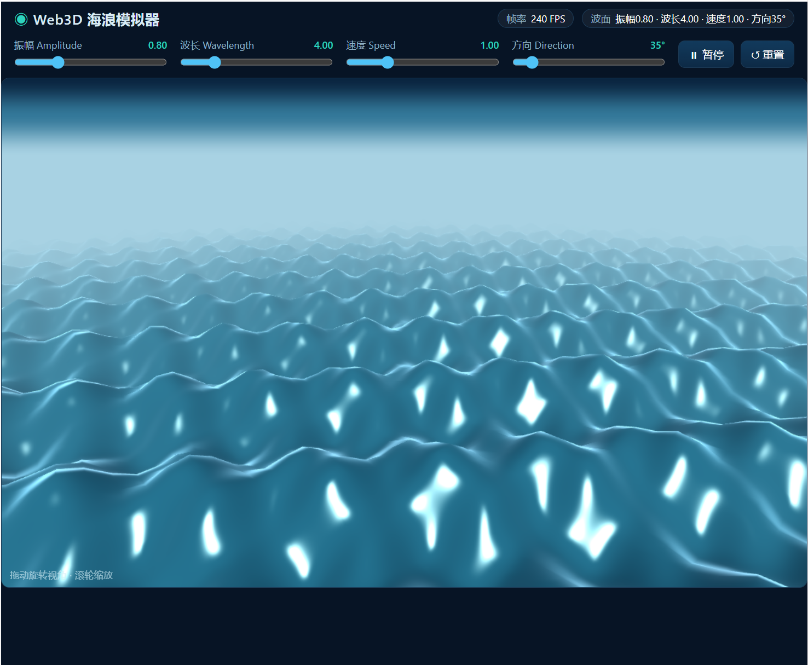
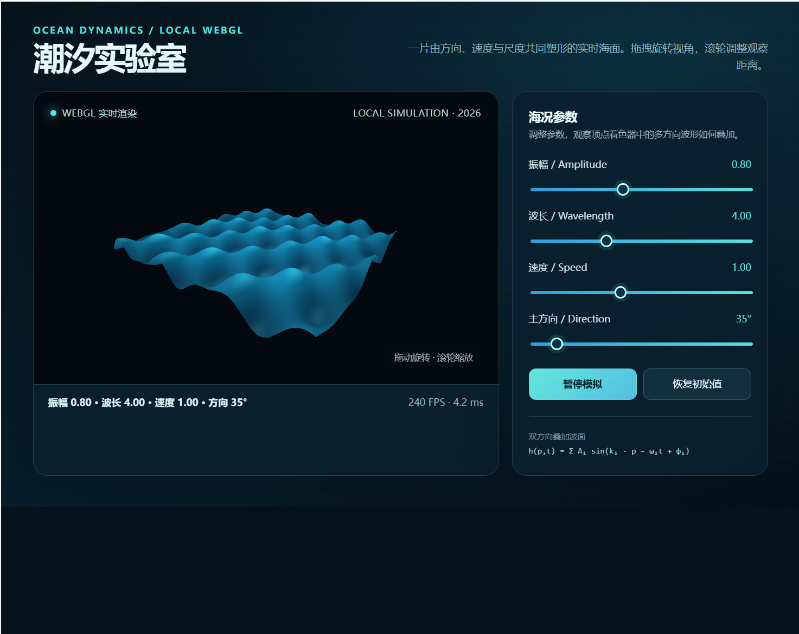
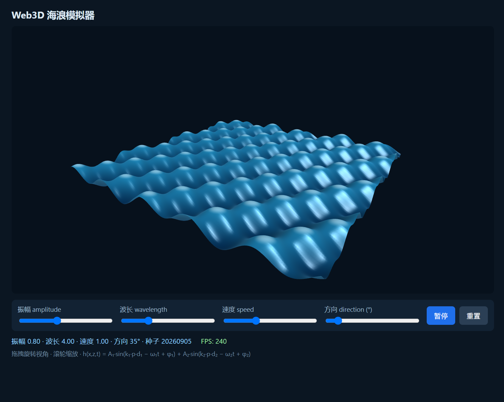

这 0.76 分，能说明多少？
Kimi K3 与 GLM 5.3 相差 2.80 分；GLM 5.3 与 DeepSeek V4 Flash 相差 1.00 分。单看榜单，它们排成了三档；看评分记录，第二、第三名会随合规的整数聚合规则互换。单题评审分在不同独立轮次之间，最大差值达到 4.4 / 30 分，已经大过这两家的总分间距。
所以我的读法是：Kimi 在这轮里拿到最稳的第一；GLM 和 DeepSeek 的微小差距，不足以支持“谁明显更强”。如果把选型问题换成“这五类工程任务里，现在先试谁”，我会先试 Kimi；如果是要据此替换一套生产模型，我会再加任务、换评委复核。
这个判断有明确边界。三种合理的整数聚合规则都把 Kimi 放在第一，但这不等于跨任务、跨版本也必然如此。新增一批任务后若不再领先，我会改结论。
高分不等于没有掉链子的地方
Kimi 的 B2「库存预占」只通过了 12 条验收断言中的 11 条。失败项是 release_returns_inventory，最终得分 83.60；这也是它自动化总分比另外两家少 5 分的原因。总榜第一没有把这次真实失败抹掉。
反过来看，GLM 和 DeepSeek 的自动化验收都是 350 / 350，但盲评分数低于 Kimi。自动测试回答“契约有没有过”，工程评审还会看边界处理、测试证据和实现结构；两种分数不能互相替代。
台风路径 3D 模拟器

F1 前端题的三份交付截图。模型名称与完整 model ID 一起保留，套餐或会员档位没有写进记录。

deepseek-v4-flash
glm-5.3
kimi-k3台风路径使用合成测试数据，不是实时台风资料，也不代表气象预测能力。截图展示的是交付界面；分数来自固定验收与评分记录。
Web3D 海浪模拟器

F2 要求本地渲染真实变化的 WebGL 波面，并让振幅、波长、速度和方向控制实际影响画面。

deepseek-v4-flash
glm-5.3
kimi-k3这是本地 WebGL 展示题，不是经海洋观测数据校准的物理预测。三张图用来比较交付界面的取舍，不单独决定分数。
分数背后的运行条件
每个模型都在 Hermes Agent 中先核对身份，再从空白基线和新工作区开始；任务题面、工具、超时与固定验收命令按运行契约锁定。自动化验收先确认结果有效，再把匿名证据交给 GPT-5.6 盲评。五题、三模型，共 15 个正式单元，最终 15 / 15 全部计分；没有硬封顶。
- DeepSeek V4 FlashModel ID：
deepseek-v4-flash - GLM 5.3Model ID：
glm-5.3 - Kimi K3Model ID：
kimi-k3
本页结论仅适用于这轮五项任务与评测规则，不代表跨任务、跨版本的通用排名。账号套餐或会员档位未纳入记录；本轮评审仅使用 GPT-5.6，尚无多评委交叉验证。
如果现在要选
只按这五项任务的正式记录，我会把 Kimi K3 放在第一位；这个第一名在三种合规整数聚合方法里都没变。至于 GLM 5.3 和 DeepSeek V4 Flash，我不会拿 2.80 分或 1.00 分的差距讲成确定的胜负。
下一轮最值得补的，不是把小数点再多写两位，而是增加任务、换评委。样本和评审角度都更充分后，如果名次还一样，结论才更经得起追问。
分数依据：reports/benchmark-v0.1.md 与 PROJECT-INDEX.md；model ID 按正式运行记录核对。